StdLib Parametric Robotics Library
Installation
First start Rhino for Windows, version 7 or 8, and then enter the string Grasshopper Folders in the command line and select Components. Using the file browser copy the stdlib.gha file in that location. Right click on the file and select Properties. Make sure that the executable is not blocked because it was downloaded. Finally, start Grasshopper and the component library will appear in the StdLib toolbar panel. Note that the software does not work in MacOS.
The Robot Model
The Model Robot component requires a string input that specifies the robot's model to load. For the small ABB robot enter IRB1205 and for the larger robot IRB2620. It outputs a Robot data structure containing the robot's kinematics and visual models as well as the Ranges of its axes.
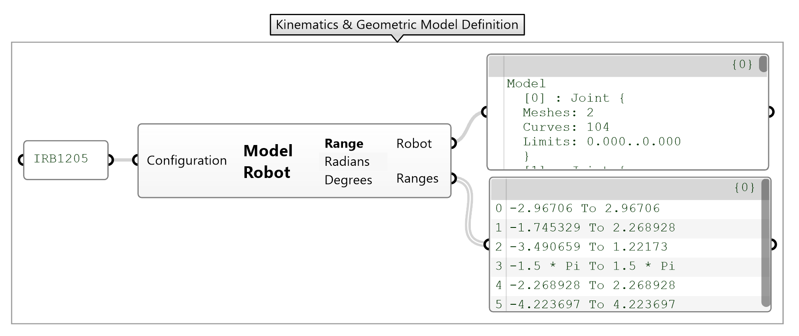
Forward Kinematics
The Forward Kinematics component requires the Robot model defined above and the Joints in the form of a list of angles in radians. It outputs the robot's State structure containing all the geometric transformations of each axis as well as the coordinate systems in the form of Planes for each. In the example below the Number Vector component becomes a multi-slider after being connected to the robot's Ranges, where each slider can be used to interpolate the angles for each of its six axes.
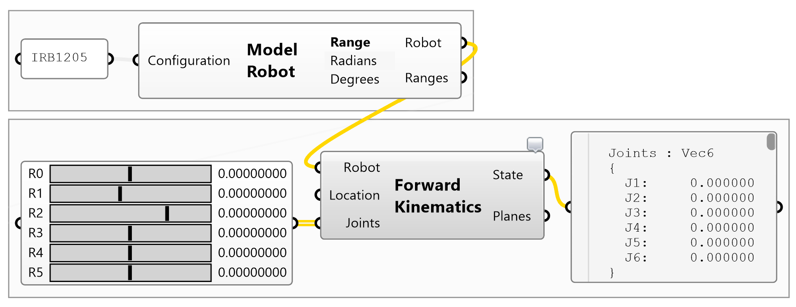
Joint Planes
The Planes output is useful for attaching dynamic geometry that follows the robot's movement such as cables, ducts and tools in general. The last plane is particularly useful because it is associated with coordinate system at the flange of the robot.
TCP Snapshot
The component features a Bake CS menu option when right-clicked over its label. The command stores a visual representation of the coordinate system at the flange in the active document. This is useful for probing locations from the physical world as well as recording the orientation of the robot's TCP.
Display Robot Model
The Display Robot Model component requires the Robot model and its State to produce a dynamic visualization in the viewport. There are several option toggle buttons rendered on the component that can be used to change display settings and show and hide various robot parts.
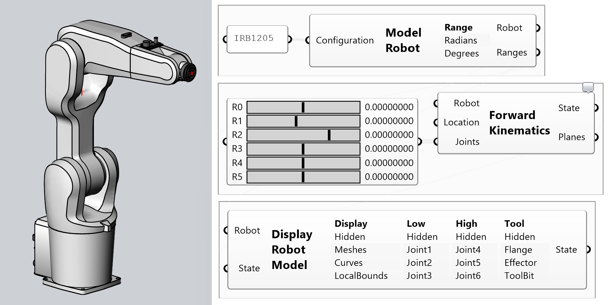
Publish
The component features a Publish menu option when right-clicked over its label. The command stores the robot's mesh in the active document. It may be used for visualization and figures.
Inverse Kinematics
The Inverse Kinematics component requires the Robot model and a Target plane to produce a table of joint angle configurations associated with the pose. Note that not all configurations are feasible due to physical limitations of the robot.
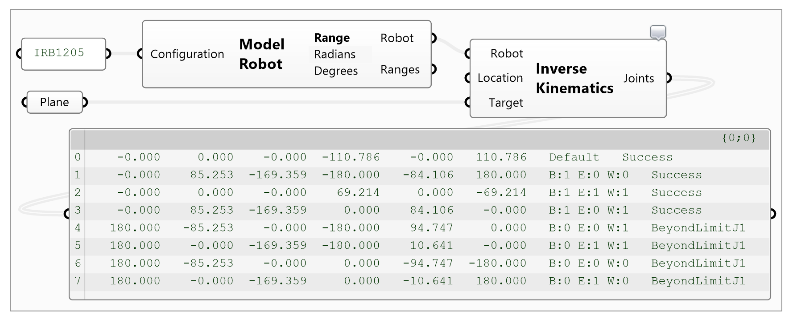
Pose Settings
The Pose Settings component serves a dual purpose: (a) It assists in semantically selecting one of the joint angle configurations returned by the Inverse Kinematics component, and (b) It can be used without input as a setting selector for specifying the initial pose for a motion task.
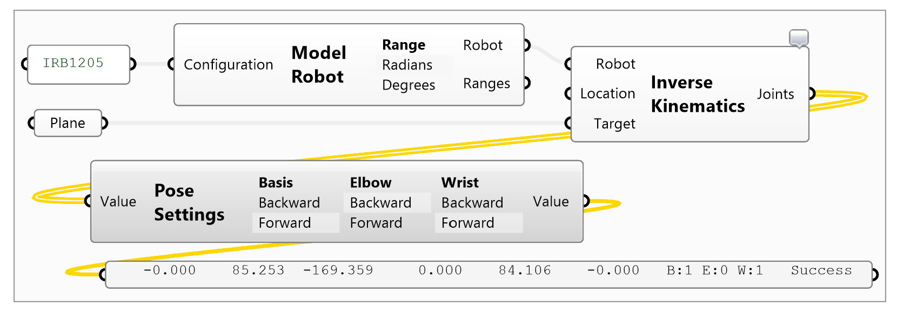
Typically six-axes robots have three axis of symmetry which require selecting one of the two available options for each. The two options represent the rotation of a joint between 0 and 180 degrees. Therefore, this amounts to 2^3=8 solutions of the inverse kinematics function for the same target pose. The axes of symmetry are at the base (J1), elbow (J3) and wrist (J4).
Robot Tasks
The Robot Task component captures several robot programming operations presented below. It features a page-based user interface style with primary options and a clickable list of sub-options.
Motion
The Motion page contains different ways to define motion paths, namely by (a) Joint angle sequences, (b) Plane sequences with joint angle interpolations, which is supported by UR systems, (c) Linear plane-to-plane sequences, which is the most commonly used path type, and (d) Universal, which is an advanced option for custom motion instructions. The input parameters vary based on motion path waypoint type but they all can optionally provide information regarding operations that can take place before the motion begins, during every waypoint and after the motion has completed.
Forward Kinematics
Paths defined by joint angle waypoints, or forward kinematics paths, require a sequence of joint angles stacked into a list. Note that the Robot Task requires a list of lists of joint angles which may be constructed using the List Edit component using the Stack option. Note that the motion between the waypoints is interpolated in the joint angles space, therefore the shape of the trajectory is non-linear.
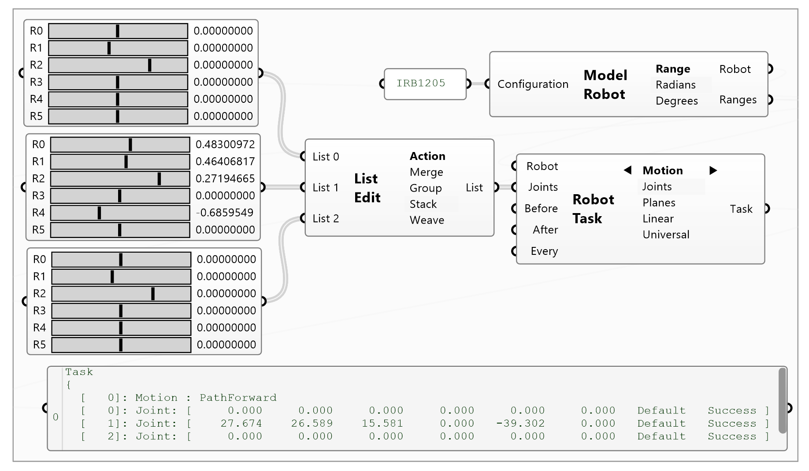
Inverse Kinematics
Paths defined by plane waypoints, or inverse kinematics paths, require a sequence of target coordinate systems, that capture the position and orientation of the robot, in a list. Note that the interpolation between waypoints is performed linearly, therefore the shape of the trajectory is a line-string. Additionally, the pose of the robot must be supplied for selecting the appropriate inverse kinematics solution.
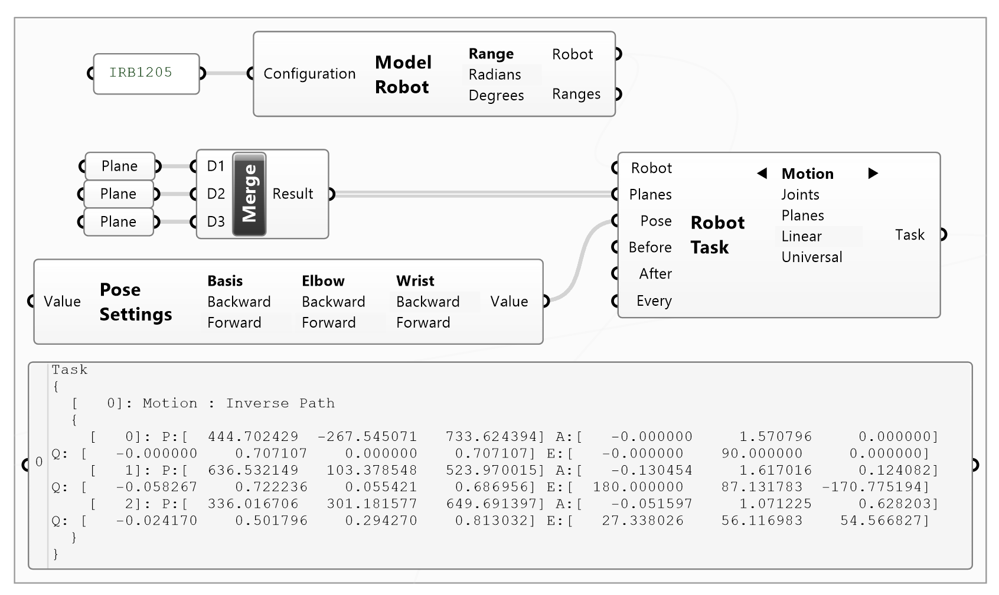
Signals
The Signals page contains operations pertaining clearing, setting and toggling output signals. This is for controlling tools such as gripper and any other devices that have been integrated with the robot's controller. The component requires the name of the signal, as a string, and optionally a value. Note that it is important to provide the correct type of data for the value: analog signals may be supplied with a real / floating point value, digital bit signals require integers 0|1, and digital group signals unsigned integers expressing their bit values.
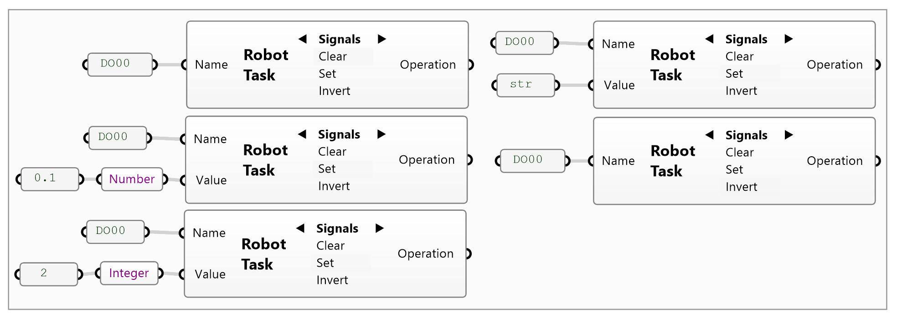
Control
The Control page contains operations for setting the motion speed, introducing delays and pausing the program. The motion speed input parameters include the position and rotation acceleration and velocity as well as the blending radius of the motion path. The value are in metric units such as 50mm/sec and 500deg/sec.
Blend radius of 0mm forces the robot to hit the waypoints exactly following a trapezoidal motion profile, while larger values allow the robot to maintain its velocity but miss interim waypoints by the radius provided. Note that the blend radius must be appropriate for the speed and waypoint distance provided otherwise the controller will be able to meet the requirements and miss waypoints altogether!
The Sleep operation introduces a delay, in seconds, between consecutive instructions. This may be used for synchronization procedures such as waiting for a pneumatic gripper to properly open or close at the beginning or end of a motion path. The Pause operation inserts an instruction that pauses the program from executing until the user has selected a halt or proceed action.
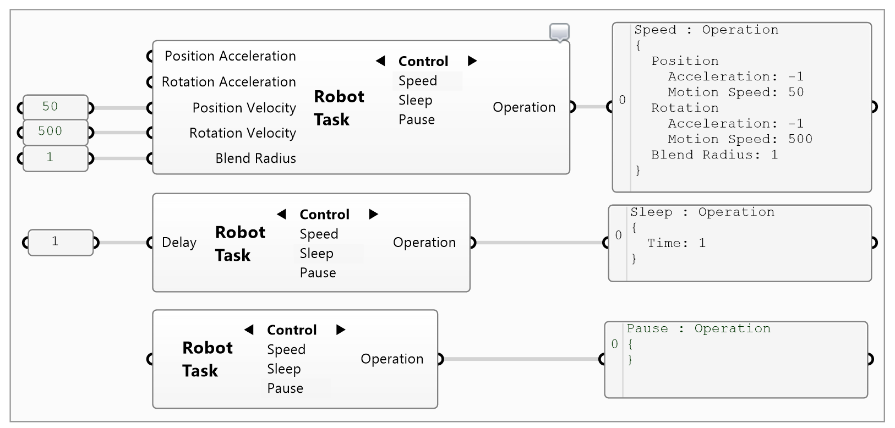
Syntax
The Syntax page contains operations for modifying the program directly by injecting chunks of code locally or globally. The Comment operation places the content of the input parameter as a code comment locally into the program stream. The Message operation print in the pendant messages window the string provided. The Local operation injects the code provided at the point of execution, that is before, at every waypoint or after a motion task has completed. Finally, the Global operation injects the code snippet supplied at the global section of program. Note that the Local and Global operations require code snippets in the particular programming language used by the robot, so they are not portable.
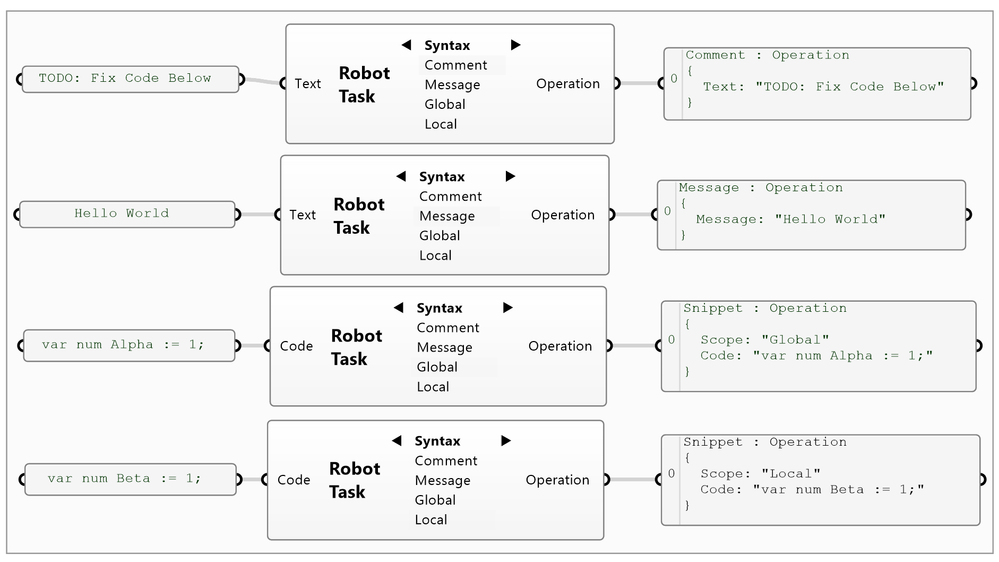
Modify
The Modify page contains a few advanced operations for adjusting tasks and operations. The Drop task command converts an inverse kinematics motion path to a forward kinematics path. This may be useful for motion debugging purposes, because joint angle paths are unambiguous, and it is rarely used.
The Merge tasks command combines multiple tasks into one. A task is roughly associated with programming language function called from the main function. Using merge causes all the code that would have been separate functions to fuse into the same function body. This is equivalent to code inlining.
The Fuse operations command enables combining multiple operations into one. An operation is equivalent to a single programming language instruction. Fusing operations is equivalent to constructing a group of instructions. This is useful for instance for setting the speed and signals before a motion task. The result is thus a group operation which can be used for the before, every and after parameters.
The Explode command dumps the joint angles of a motion task into a data tree. This is also for debugging and advanced custom code generation purposes and rarely used.
Display Robot Motion
The Display Robot Motion is a geometric motion simulation component that allows visualizing robot tasks before running them on the physical device. It features two stacked sliders, where the top one interpolates the entire sequence of waypoints, and the bottom one interpolates between two consecutive waypoints. The buttons from left-to-right correspond to: go to the first/last waypoint, go to the next/previous waypoint, and animate forward/backward, depending on whether they are left or right clicked, respectively.
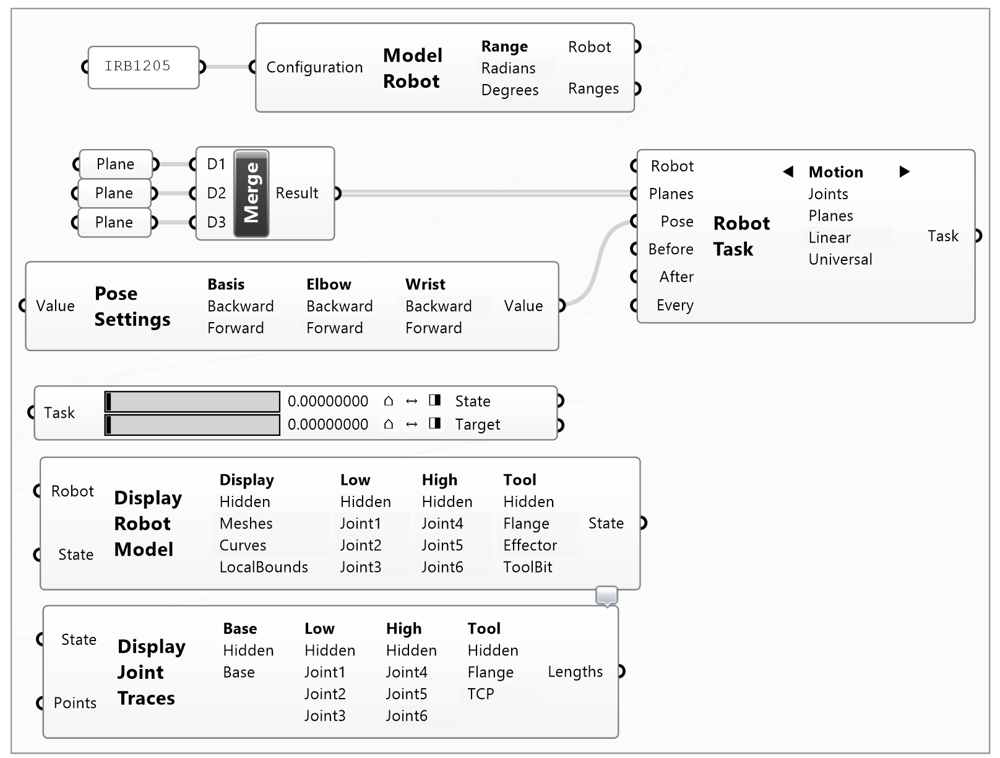
Display Joint Traces
The Display Joint Traces component is used for visualizing the motion traces of the robot's joints as they move in space. This is often useful for debugging motions that produce excessive joint rotations and for viewing the shape of waypoint interpolations. The Points parameter is for specifying the number of points per curve to record, which is set to 32 by default.
Machine Code
The Machine Code component translates one or more robot tasks into the programming language required by the particular robot manufacturer. There are various languages supported as well as code generation options such as whether to emit flange or tool poses, the number of decimal points and level of code verbosity. Note that uploading the wrong type of machine code file to the controller can cause problems, so make sure to select the correct language first!
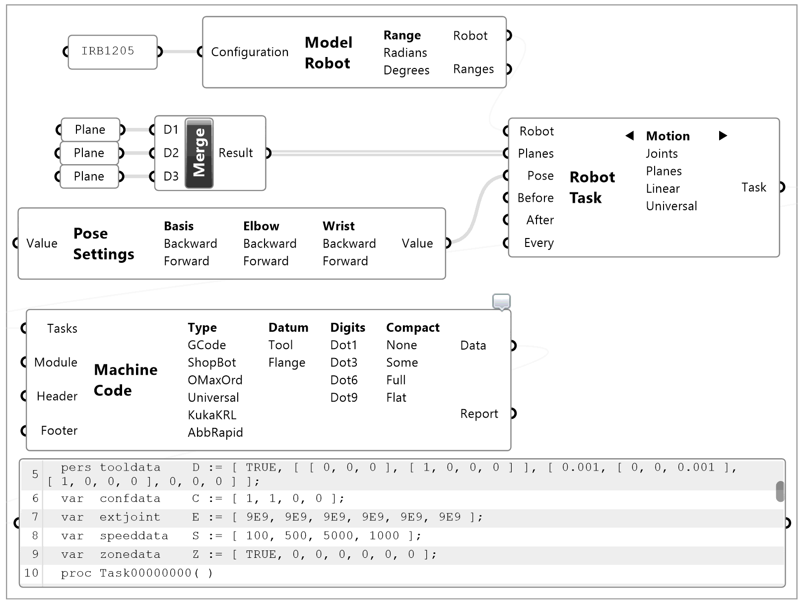
File Transfer Request
The File Transfer Request component is used for uploading the machine code to the robot's controller. It requires the IP address of the robot's controller, for ABB it is 192.168.125.1 and the port number 21 is for regular or unsafe FTP. The username and password are also required as well as the file path to store the module contents.
Note that the file must be placed in an existing folder. The command will not construct any new folders specified in the path string. If the folder is not present in the file system the command will just fail. The file must have the .mod extension and there should be a project file .prg that references the module.
Additionally, note that the Machine Code component emits the program line-by-line because Grasshopper freezes when rendering very large strings in panels. The Text Join component combines all the lines of code with the new line characters CRLF into a single string which is provided as the content of the upload. If the program is long do not try to visualize the code in a panel to avoid freezing the system!
If the robot controller and your laptop can communicate via ethernet and all goes well the message Transfer Complete will appear in the Result output parameter. Otherwise an error message, most likely caused by bad network configuration, will appear. If the robot suddenly starts failing FTP request after a while, do restart the controller.
Finally, it is recommended to disable the component when not connected to the robot, otherwise your computer will freeze while trying to contact the robot until the request times out with an error. So disable first, then save the parametric model and only enable when ready to upload.
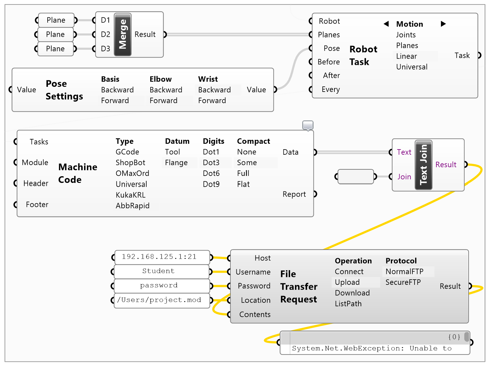
Robot Communications
The Robot Communications component allows for connecting to the robot's controller over the ethernet to obtain its current state. In this sense it is possible to monitor and record the robots actions while it is manually jogging or executing code. The command requires the IP address of the controller, here 192.168.125.1 and service port number 5515, as well as the polling frequency in milliseconds. Note that to avoid flooding the controller do not use rates faster than 100ms. The component returns the current joint angles which can be used for visualization as seen below.
Activating and deactivating the communications component is performed by the relevant pop up menu option that appears after right clicking over the component's label. If your computer can communicate with the robot, then Messages output parameter will keep updating with a heartbeat signal, otherwise it will report errors.